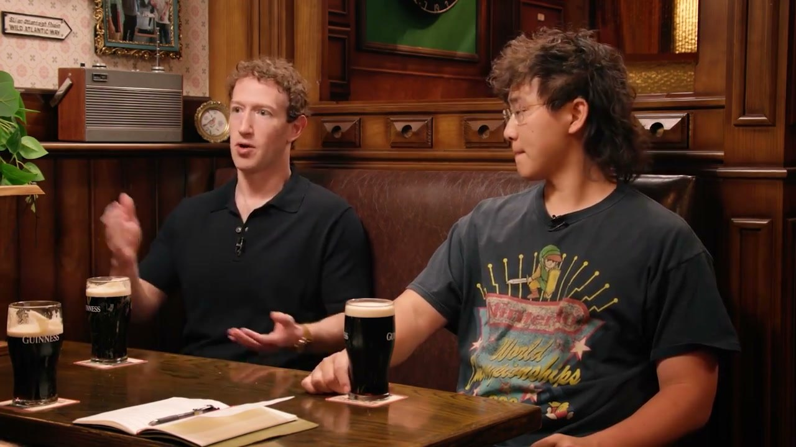

목소리
마크 저커버그와 알렉산더 왕
뮤즈 원더, 1,000억 달러짜리 AI 베팅
공개 · Cheeky Pint

마크 저커버그와 알렉산더 왕, 존 콜리슨이 뮤즈와 뮤즈 원더를 바탕으로 개인 에이전트가 제품과 상거래를 바꾸는 방식, 메타의 대규모 투자와 여러 AI 모델이 공존할 시장을 이야기한다.
- 러닝타임
- 2:14:31
- 구성
- 12 CHAPTERS
- 전체 발언
- 667 TURNS
CARROT CAVE INSIGHTS
- AI가 사용자의 맥락을 기억하고 일을 끝까지 맡게 되면, 제품 경쟁은 기능을 더하는 싸움에서 믿고 맡길 수 있는 행동을 만드는 싸움으로 바뀐다.
- 에이전트가 구매를 대신하면 기업은 사람의 눈길을 끄는 광고뿐 아니라, 에이전트가 비교하고 선택할 수 있는 상품 정보와 거래 환경을 갖춰야 한다.
- 여러 모델을 쉽게 바꿔 쓰는 환경에서는 최고 성능만으로 고객을 붙잡기 어렵고, 작업별 성능과 가격, 안정성을 함께 맞추는 쪽이 유리해진다.
- AI 개발에 큰돈이 먼저 드는 구조에서는 기존 사업의 현금이 실험을 버티는 힘이 되고, 그 실험이 다시 기존 사업의 수익을 키우는 고리가 생긴다.
- AI가 앱을 열지 않고도 일을 처리하게 되면, 사용자를 붙잡는 자리는 스마트폰 화면에서 일상을 보고 듣는 기기와 그 안의 에이전트로 옮겨간다.
인터뷰 정보·출처와 방법
- 원제: Muse Wonder: Zuckerberg and Wang’s $100B AI
- 출연: 메타 CEO 마크 저커버그, 메타 최고 AI 책임자 알렉산더 왕
- 진행: 스트라이프 공동창업자 존 콜리슨
- 공식 게시: Cheeky Pint, 2026년 10월 12일
- 작성 방법: Cheeky Pint 공식 전사의 발언 667개 전체를 한국어로 옮기고 공식 영상 시간에 맞춤. 12개 장 요약과 핵심 문장 23개 표시. 고유명사는 공식 표기를 따름
전체 대화
대화를 불러오는 중입니다…
뮤즈의 성장을 이끈 활용 사례
00:00:00 ↗뮤즈는 격투기 코칭에 필요한 코드를 보이지 않는 곳에서 짜고 개선한다. 메타는 이런 개인 에이전트를 만들기 위해 글뿐 아니라 영상과 소리를 이해하는 능력에 집중한다.
모델이 곧 제품이 되는 이유
00:07:28 ↗AI 제품의 차이는 겉모습보다 모델이 어떻게 행동하고 말하는지에서 나온다. 기능과 성격을 모델에 학습시키는 일이 곧 제품을 만드는 일이 된다.
뮤즈 원더를 소개하다
00:14:35 ↗메타는 뮤즈 원더가 최고 수준의 모델들과 경쟁할 만하다고 말한다. 오래 기억하고 복잡한 작업을 끝까지 해내도록 설계해 개인용과 업무용 에이전트에 초점을 맞췄다.
최첨단 모델을 만드는 실제 과정
00:24:56 ↗좋은 모델은 외부 벤치마크 점수보다 실제 쓰임새에 맞춰 평가하며 만든다. 사전학습의 데이터와 연산 규모를 키우는 동시에 강화학습의 과제와 학습 방식을 다듬어야 한다.
1,000억 달러를 건 베팅
00:48:26 ↗최첨단 AI 개발은 성과를 확인하기 전에 거액을 걸어야 하는 장기전이다. 메타는 미래 제품을 직접 만들려면 자체 초지능과 이를 뒷받침할 시설이 필요하다고 본다.
에이전트가 이끄는 상거래
01:07:21 ↗에이전트는 구매의 번거로움을 줄이고 개인 사정에 맞춰 쇼핑을 대신한다. 이는 기존 구매를 편하게 하는 데 그치지 않고 새 수요를 만들어 상거래 시장을 키운다.
오픈라우터와 모델 경쟁
01:19:34 ↗존 콜리슨이 읽는 협찬 안내다. 스트라이프가 인수하기로 한 오픈라우터는 여러 AI 모델을 API 하나로 연결해 가격 비교와 장애 우회를 돕는다.
스마트폰을 넘어선 인터페이스
01:20:06 ↗AI는 말로 지시받고 눈으로 결과를 보여주며, 정보 전달을 넘어 직접 일을 처리하는 쪽으로 나아간다. 안경과 가정용 기기는 이런 AI를 쓰는 새로운 통로가 된다.
AI 투자 자금 마련
01:27:00 ↗메타는 뮤즈의 구독과 상거래, 기업용 서비스로 AI 투자비를 벌 계획이다. AI로 기존 핵심 사업의 성장만 조금 더 높여도 필요한 자금의 상당 부분을 마련할 수 있다고 본다.
AI가 승자독식이 아닌 이유
01:34:06 ↗AI 모델은 서로 다른 작업에 맞춰 발전하고, 증류는 후발 주자가 선두를 따라잡도록 돕는다. 여러 기업과 개발자도 한 회사의 독점보다 다양한 모델이 공존하는 쪽을 택한다.
메타 초지능 연구소(MSL)
01:40:46 ↗메타 초지능 연구소는 뛰어난 인재를 모으고 회사 전체를 AI 중심으로 바꾸며 출발했다. 연구소를 이끄는 사람에게는 유연한 판단과 직접 기술을 다루는 능력이 필요하다.
마크 저커버그 밑에서 일하기
02:08:11 ↗마크 저커버그는 새 정보를 믿게 되면 행동을 빠르고 크게 바꾼다. 메타는 아직 실적에 드러나지 않은 변화에도 과감히 투자하며, AI에서도 말보다 행동으로 믿음을 보여준다.